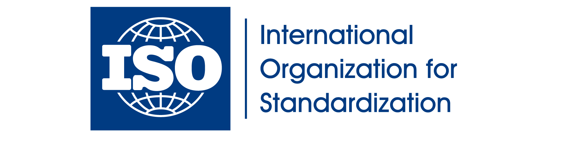

國際再生能源憑證 I-REC/TIGR
什麼是國際再生能源憑證 (I-REC)?
國際再生能源憑證（International Renewable Energy Certificate, I-REC）是一種全球公認的憑證，證明電力消費者購買了來自再生能源來源的電力。I-REC 系統為企業和個人提供了一種追蹤和證明其使用的電力來自可再生能源的工具。
了解 I-REC

這是一些精美的假文這是一些精美的假文這是一些精美的假文這是一些精美的假文這是一些精美的假文這是一些精美的假文這是一些精美的假文這是一些精美的假文這是一些精美的假文這是一些精美的假文這是一些精美的假文這是一些精美的假文這是一些精美的假文這是一些精美的假文這是一些精美的假文這是一些精美的假文
了解更多